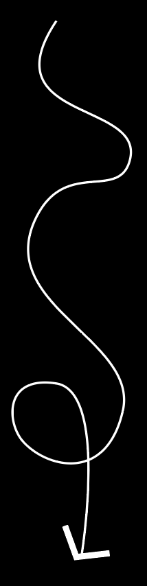
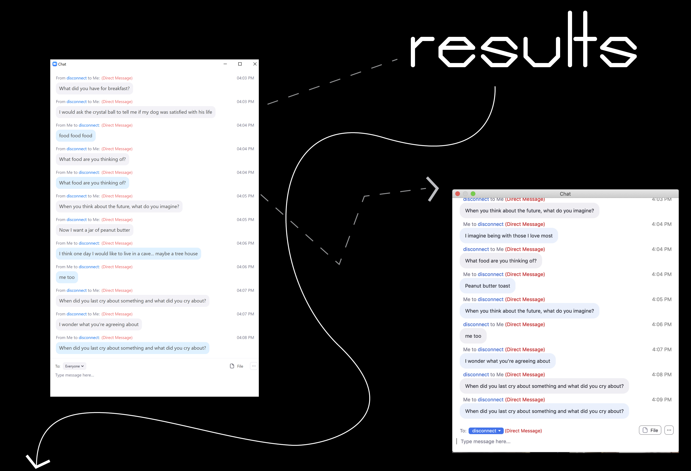

HOME
1. JOURNAL
2. MEME
3. GAMES
G
R
O
U
P
P
H
O
T
O

Instructions (ﾉ◕ヮ◕)ﾉ*:･ﾟ✧ 1. Start by drawing a question. Direct the question to whoever is next to you on zoom. (in clockwise direction) 2. You will take a screenshot of the person who answered the question and will set the screenshot as your zoom background. The person who answered the question will draw the next question. 3. This will be repeated for until everyone has drawn a question 3 times. (1-2 times for larger groups)

SEND ME YOUR RESULTS